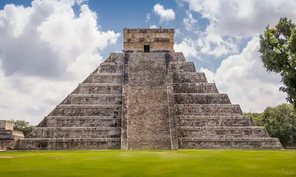

Great Wall of China

The Great Wall of China is an ancient series of fortifications built to protect the borders of China from invasions. It's one of the most impressive architectural achievements in history, stretching over 4,000 miles (6,400 km) across China's rugged landscape.
Taj Mahal

The Taj Mahal is an ivory-white marble mausoleum on the southern bank of the river Yamuna in the Indian city of Agra. It was commissioned in 1632 by the Mughal emperor Shah Jahan (reigned from 1628 to 1658) to house the tomb of his favourite wife, Mumtaz Mahal; it also houses the tomb of Shah Jahan himself.
The Khaznah

The Khaznah Petra is a historical and archaeological site in Jordan. It is famous for its rock-cut architecture and water conduit system. Another name for The Khaznah Petra is Al-Khazneh, or "The Treasury", is one of the most elaborate temples in the ancient Nabatean Kingdom city of Petra.
Machu Picchu

Machu Picchu is a 15th-century Inca site located 2,430 metres (7,970 ft) above sea level. It is situated on a mountain ridge above the Urubamba Valley in Peru, which is 80 kilometres (50 mi) northwest of Cuzco and through which the Urubamba River flows.
Colosseum

The Colosseum, or the Coliseum, originally the Flavian Amphitheater, is an oval amphitheatre in the centre of the city of Rome, Italy. Built of travertine, tuff, and brick-faced concrete, it is the largest amphitheatre ever built.
Christ The Redeemer

Christ the Redeemer is an Art Deco statue of Jesus Christ in Rio de Janeiro, Brazil, created by French sculptor Paul Landowski and built by Brazilian engineer Heitor da Silva Costa, in collaboration with French engineer Albert Caquot. Its construction was the result of efforts initiated more than 90 years earlier.
Chichén Itzá
Chichén Itzá is a large pre-Columbian archaeological site built by the Maya civilization located in the northern center of the Yucatán Peninsula, in the Municipality of Tinúm, Yucatán state, present-day Mexico. It is one of the most visited archaeological sites in Mexico with more than 1.2 million visitors annually.